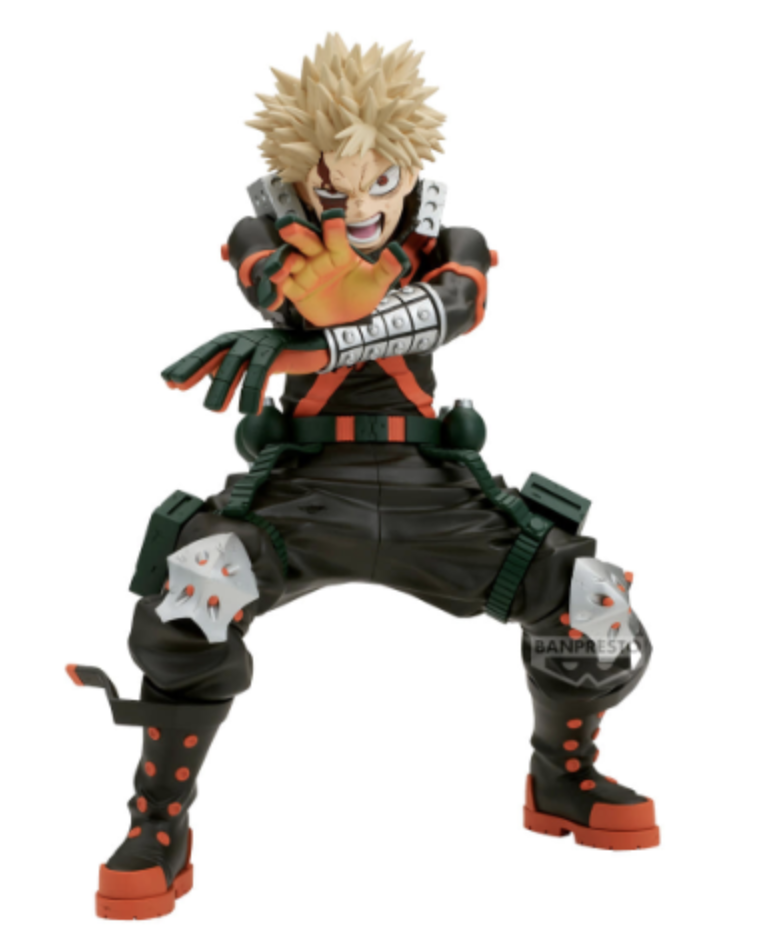

AkibaLens
AI-powered figure identification and marketplace search assistant for anime figure shoppers in Japan.
Executive Summary
AkibaLens는 아키하바라, 돈키호테, 중고 피규어샵에서 박스 없이 진열된 피규어를 발견했을 때 정확한 캐릭터명, 작품명, 상품명을 몰라 검색과 가격 비교가 어려운 문제를 해결하기 위해 만든 AI 쇼핑 보조 MVP이다.
사용자는 피규어 사진을 업로드하고, 시스템은 OpenAI Vision으로 캐릭터와 작품을 추정한 뒤 OpenAI Web Search를 통해 상품 후보를 검색한다. 이후 후보를 다시 점수화하고, 일본 쇼핑몰 검색 링크와 가격 확인 preview를 제공한다.
https://frontend-ten-lake-39.vercel.app
https://akibalens.onrender.com
https://github.com/jinjintaek/AkibaLens
Problem Definition
User Pain
- 피규어 이름을 모른다.
- 캐릭터명과 작품명을 모른다.
- 일본어 상품명을 검색하기 어렵다.
- 제조사와 라인업을 구분하기 어렵다.
- 현재 가격이 합리적인지 판단하기 어렵다.
MVP Goal
- 사진 한 장으로 검색 시작점을 만든다.
- 캐릭터/작품을 우선 식별한다.
- 상품 후보와 근거를 함께 제공한다.
- 일본 쇼핑몰 검색 링크를 제공한다.
- 불확실한 정보는 단정하지 않는다.
System Architecture
MVP는 자체 CV 모델 학습 대신 API 기반 구조를 사용했다. 빠른 검증이 목표였기 때문에 OpenAI Vision과 Web Search를 조합하고, 서비스 흐름과 불확실성 처리에 집중했다.
| Layer | Implementation |
|---|---|
| Frontend | Next.js, TypeScript, Tailwind CSS, Vercel |
| Backend | FastAPI, Pydantic, Uvicorn, Render |
| AI | OpenAI Vision, OpenAI Web Search, structured output |
| Search | AmiAmi, Mandarake, Suruga-ya search links and retrieved candidates |
Implemented Features
Production API 테스트에서 mode: openai,
model: gpt-5.2 응답을 확인했다. Render free tier 특성상
첫 요청은 느릴 수 있지만, 배포된 환경에서 실제 이미지 분석이 정상
동작한다.
Sample Evaluation
| Sample | Expected | Result | Verdict |
|---|---|---|---|
| sample_01 | Bakugo / My Hero Academia / Grandista | Bakugo and series correct, Banpresto detected, Grandista missed | Partial Success |
| sample_02 | Gojo / Jujutsu Kaisen / Luminasta | Character and series correct, Luminasta missed | Partial Success |
| sample_03 | Luffy / One Piece / Ichiban Kuji | Character and series correct, Ichiban Kuji missed | Partial Success |
| sample_04 | Reze / Chainsaw Man / Nendoroid | Predicted Mizore Yoroizuka / Sound! Euphonium | Failure |
| sample_05 | Tanjiro / Demon Slayer / Ichiban Kuji | Character and series correct, Ichiban Kuji missed | Partial Success |
Representative Production Result

Production API Output
- Mode: openai
- Model: gpt-5.2
- Character: Katsuki Bakugo
- Series: My Hero Academia
- Manufacturer clue: Banpresto
- Retrieval: Suruga-ya candidates returned
- Reranking: Top candidate scored 86 / 100
이 결과는 배포된 Render backend가 실제 OpenAI API를 사용해 이미지 분석, 검색 후보 생성, reranking까지 수행했음을 보여준다.
Key Technical Decisions
Why API-first?
프로젝트의 목적은 커스텀 모델 성능 경쟁이 아니라, 실제 사용자가 원하는 워크플로우인지 빠르게 검증하는 것이었다. 따라서 CLIP fine-tuning이나 자체 CNN 학습은 MVP 범위에서 제외했다.
Why Search-based Retrieval?
Vision만으로 상품명과 라인업을 확정하기 어렵다는 문제가 있었다. 이를 보완하기 위해 Vision 결과를 검색어로 변환하고, Web Search로 상품 후보를 가져온 뒤 다시 reranking하는 구조를 선택했다.
Problems Found and Solved
| Problem | Resolution |
|---|---|
| Vision output was too conservative for loose figures | Prompt changed to aggressively provide character/series hypotheses while keeping manufacturer/line uncertain. |
| Google Custom Search access failed for new project | Switched MVP retrieval provider to OpenAI Web Search. |
| Filename hints distorted evaluation | Renamed samples to neutral filenames and reran evaluation. |
| Production backend returned mock mode | Fixed Render environment variable name to OPENAI_API_KEY and redeployed. |
Current Limitations
AkibaLens는 현재 “정확한 상품 확정 서비스”가 아니라 “사진을 검색 가능한 상품 후보와 일본어 검색어로 바꿔주는 AI 검색 보조 MVP”로 포지셔닝하는 것이 가장 적절하다.
Next Steps
- 캐릭터/작품 결과를 먼저 보여주고 상품 검색은 별도 단계로 표시한다.
- 박스, 받침대, 가격표 사진을 추가로 받아 정확도를 높인다.
- 상품 페이지 이미지와 업로드 이미지를 비교하는 reranking을 검토한다.
- 샘플을 20장 이상으로 늘리고 조건별 평가셋을 만든다.
- 쇼핑몰 정책을 확인한 뒤 실제 가격 파싱 여부를 결정한다.
Conclusion
AkibaLens MVP는 배포된 환경에서 이미지 업로드, OpenAI Vision 분석, 검색 후보 생성, candidate reranking, 쇼핑몰 링크 제공까지 end-to-end로 동작한다.
포트폴리오 관점에서 이 프로젝트의 가치는 단순히 AI API를 호출했다는 점이 아니라, 실제 사용자 문제에서 시작해 MVP 범위를 정하고, 평가 과정에서 label leakage와 상품 식별의 난이도를 발견했으며, 이를 바탕으로 불확실성을 전제로 한 제품 UX를 설계했다는 점이다.